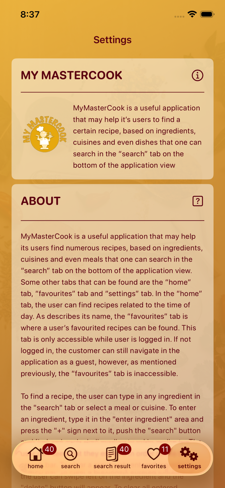

1
Search by ingredients
Add what you have at home and build a recipe search around it.
My MasterCook helps you discover recipes from ingredients you already have, explore cuisines and meals, save favorites, and keep every cooking idea close at hand.

Search by ingredients, meals, cuisines and dietary preferences. Save favorites, check nutrition info and jump straight into recipe instructions.
Add what you have at home and build a recipe search around it.

Browse results with ratings, nutrition details and serving sizes.

Open the recipe, check nutrition and follow the method.

Save the dishes worth returning to in one personal collection.
Discover a recipe worth making today.

A straightforward cooking companion built around finding recipes.
Begin with your own ingredients. Add them, choose the kind of meal you want, select a cuisine or dietary preference, and explore matching recipe ideas.
Open My MasterCook, add what you have, and turn everyday ingredients into your next recipe.